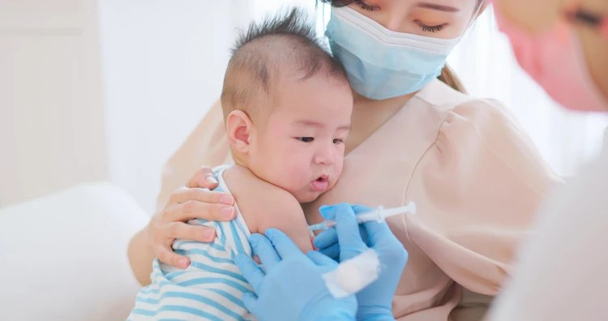

Benefits:
The vaccine provides protection against several diseases, including diphtheria,
pertussis, tetanus, hepatitis B, and Haemophilus influenzae type b (HiB), offering comprehensive coverage against
a range of potentially serious infections.
| VACCINATION | WHAT FOR | WHEN |
| DPT-HepB-HiB | Diphtheria (भ्यागुते रोग) | 6, 10, 14 weeks |
| Pertussis (लहरे खोकी) |
| Tetanus (धनुषटंकार) |
| Hepatitis B and |
| Haemophilus influenzae type b |
DPT-HepB-HiB
DPT-HepB-HiB is a combination vaccine that protects against several diseases. Here's a breakdown of what each component targets:
- DPT: This part of the vaccine protects against three diseases: diphtheria, pertussis (whooping cough), and tetanus. Diphtheria is a bacterial infection that affects the throat and nose, pertussis is a highly contagious respiratory disease characterized by severe coughing, and tetanus is a bacterial infection that affects the nervous system and can lead to muscle stiffness and spasms.
- HepB: This component targets hepatitis B, a viral infection that affects the liver. Hepatitis B can lead to severe liver damage, including liver cirrhosis and liver cancer.
- HiB: This part of the vaccine protects against Haemophilus influenzae type b (HiB), a bacterium that can cause severe infections, including meningitis (inflammation of the membranes covering the brain and spinal cord) and pneumonia.
Combining these vaccines into one shot simplifies the vaccination process and reduces the number of injections required, making it more convenient for both healthcare providers and patients, especially infants and young children who need multiple vaccinations. This combination vaccine is commonly administered as part of routine childhood immunization schedules in many countries.